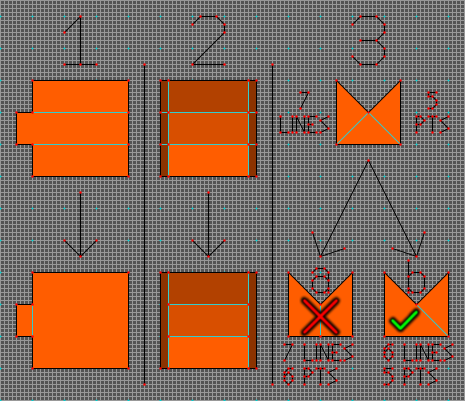

I ran out of map indices. Wat do?
A problem that has plagued every creator of sufficiently complex Marathon Aleph One maps is its limit of 65,536 map indices – its primary cap on map complexity. I explain the matter at greater length in my general guide, but in short, each vertex, each line, each polygon, each line shorter than 0.5 World Units (polygon exclusion zones, used to denote lines players can’t cross), each platform, and each polygon within a 10 World Unit X/Y radius of each sound object uses a map index. (Note: Take this list and all map index totals listed here with a grain of salt: the list may be incomplete, and I may not have every factor exactly right. I plan to do a deep dive into the source code within the coming weeks.) 65,536 initially sounds like a lot, but this all adds up quickly!
Unfortunately, if you run out of map indices, your only choice is to simplify your level – otherwise, it won’t even load due to an assertion failure. If you have an easy way to split it into two levels without compromising the mission or the flow, that’s by far the optimal choice, as it allows you to leave its detail intact. (The sole caveat is that you’ll need to be sure any geometry shared between both levels remains consistent, or it’ll spoil the effect of them being connected.)
If that isn’t an option, you’ll have to reduce the level’s count of one or more of the following:
- Polygons
- Lines
- Vertices
- Platforms
- Polygon exclusion zones (lines shorter than 0.5 World Units)
- Sound objects
It may seem tempting to prune sound objects first, as they are by far the largest user of map indices, but I’d advise caution in doing so – sudden transitions from one ‘sound region’ to another can be jarring. Aleph One 1.7’s new OpenAL sound engine actually lessens this problem somewhat by preventing sounds from suddenly cutting off when the player crosses from one boundary to another; however, they still suddenly start up, so only half the problem has been solved.
Prune Polygons Where Possible
More importantly, though, you almost certainly didn’t fill polygons as efficiently as you could’ve. I mentioned in my case study on map complexity that ‘Monument to All Your Sins’ (a massive level from RyokoTK’s brilliant net map pack Starlight) has 1,843 polygons. In addition, it has 3,277 vertices and 5,171 lines.
Before I proceed here, I want to be extremely clear that the following is not in any sense meant to throw shade at Ryoko, who’s one of the most prolific and consistently brilliant Marathon level designers in history. I’m not on his level and doubt I ever will be. That said, the solo adaptation I created for Marathon Chronicles, from which I removed none of the original’s visual complexity, contains 1,784 polygons, 3,271 vertices, and 5,106 lines (a savings of 59 polygons, 6 vertices, and 65 lines). The image below (click to enlarge) compares the two versions to show where I pruned polygons:
The fact that I only found 59 polygons to prune is actually quite impressive. Here are a few levels from various editions of Where Monsters Are in Dreams with their initial polygon counts, the polygon counts I pruned them to, and the number of polygons I pruned. (In all cases, I did not visibly change the levels’ appearance.)
| Level | Ante | Post | Δ |
|---|---|---|---|
| We Were Speaking of Fate | 1,705 | 1,500 | −205 |
| Cause & Effect (first iteration) | 2,466 | 2,222 | −244 |
| Burning Memories | 2,217 | 2,020 | −197 |
| Cast Your Fate to the Stars | 1,950 | 1,768 | −182 |
I’m not letting myself off the hook for inefficient polygon use here: ‘Cast Your Fate to the Stars’ is my level!
In any case, I’m not saying this because I think it demonstrates any kind of talent on my part (for one thing, as El Estepario Siberiano, arguably the greatest drummer alive, has argued, talent is a lie); it simply requires attention to detail and understanding of geometry, both of which can be learned. I’m revealing this solely to indicate how many polygons can often be removed without negatively impacting a map’s appearance. Furthermore, pruning polygons not merely reduces a level’s map index use but also improves its performance.
Back to top · Mapmaking (basic) · Mapmaking (advanced) · Contact me · Website index
Principles of Pruning
These principles have served me well:
- Look at the floor and ceiling heights. If you have a large cluster of polygons at the same height, they may be inefficiently filled.
- Triangles are rarely the most efficient way to fill a space. Examine them especially closely.
- Moving a point by an amount that’s imperceptible to humans can often change a convex angle into a concave angle, thus allowing two polygons to be combined into one.
- Pruning lines and vertices that are attached to polygons is at least as important as pruning polygons, though it’s harder to keep track of since Weland doesn’t print those at the bottom of each level.
- To find out how many lines and vertices your map has, draw a new line unconnected to any other line. Select the line; its index will be your line count. Select the vertex you drew first; its index will be your vertex count. Now delete it. (Lines and vertices that are unconnected to any polygon don’t actually count to the map index count, so this won’t give you an exact count, but it’ll get you a rough estimate.)
- Pruning lines that are shorter than 0.5 World Units is more important, since they also use up polygon exclusion zones.
- Pruning clusters of polygons that are close to sound objects is most important of all – as I’ve said elsewhere, every single polygon within a 10 World Unit X/Y radius of a sound object uses up a map index. (Height doesn’t matter at all here.)
- Learn to recognize patterns. Here are three example patterns I find myself running into all the time. (We’ll assume that none of the pitfalls mentioned in the section below this one apply to any of these cases.)

- Our initial instinct might be to keep polygon sizes relatively constant here, but by redrawing the area so that the leftmost protrusion is one polygon and the remaining space is another, we save ourselves not only one polygon, but also three lines and two vertices – if I understand how map indices are allocated correctly, this saves us six.
- It’s often tempting to draw split polygons at every polygon boundary, but they can often be combined. In this case, we save ourselves four vertices, eight lines, four polygons, and possibly four polygon exclusion zones – again, if I understand map index allocation correctly (which may not be the case), this saves us a net twenty.
- There are two options here, and they are not created equal:
- Again, our instinct might be to keep polygon sizes equal, but filling this area with two equal-sized polygons actually adds a vertex while not reducing our line count – thus using the same number of indices we started with!
- Simply combining the leftmost polygon with the bottom-most polygon, on the other hand, saves us both a polygon and a line. This represents the most modest savings among these three examples (two map indices), but it’s also the most straightforward: it merely requires deleting a line and refilling a polygon. (You could also combine the rightmost polygon with the bottom-most one; of course, you can’t do both.)
Back to top · Mapmaking (basic) · Mapmaking (advanced) · Contact me · Website index
Potential Pitfalls of Pruning
There are, of course, potential pitfalls as well:
- The floor and ceiling heights should match.
- The floor and ceiling textures should match.
- The liquid assignments should match.
- The floor, ceiling, and liquid lights should match (or at least be indistinguishable).
- The ambient and random sounds on each polygon should match (or at least be indistinguishable).
- The polygon types (and, if applicable, their permutations) should either match or be possible to reassign in a way that meaningfully preserves their gameplay effect.
- Redrawing the polygons must not mess up movement either for the player or monsters. (If you need a refresher on how monsters move, see this Hastur’s Workshop piece I linked above.)
- You’ll have to recreate any objects that occupied these polygons after remaking them.
- If you have any terminals that use intralevel teleports, you’ll probably have to redo them after deleting and remaking polygons.
- If any teleporters took players to one of these polygons, you’ll have to reassign them.
- If there was a platform on one of these polygons, you’ll have to remake it.
- If any platform switches referred to such a platform, you’ll have to reassign them.
- If redrawing the geometry causes ‘bouncy walls’ that eject players upon collisions, you may wish to avoid doing so. (Bouncy walls are especially likely to happen with narrow polygons [<1/4 WU width] or heavily acute angles, though not all bouncy walls are caused by acute angles or narrow polygons, and not all narrow polygons or acute angles cause bouncy walls.)
- The overhead map uses polygon index to determine display order, which can mess up aesthetics – however, I should note that as conscious of aesthetics as I am, even I don’t pay a ton of attention to this. (I plan to write a Weland plugin to swap two polygons’ indices soon™.)
With all this in mind (not to mention what a pain it is to retexture areas after deleting and remaking polygons – Weland’s ‘Remember Deleted Sides’ only works some of the time), I can’t blame anyone for not finding polygon pruning to be the most attractive solution. Ideally, you can prevent the need to prune by looking closely at your geometry before you even begin texturing. However, I’m surely not the only person who’s planned one thing for a level, then wound up doing something entirely different that required fewer polygons than expected.
In any case, as time-consuming and frustrating as this process can be, it’s still – to me at least – far preferable to having to sacrifice map complexity. Hopefully this helps.
Back to top · Mapmaking (basic) · Mapmaking (advanced) · Contact me · Website index